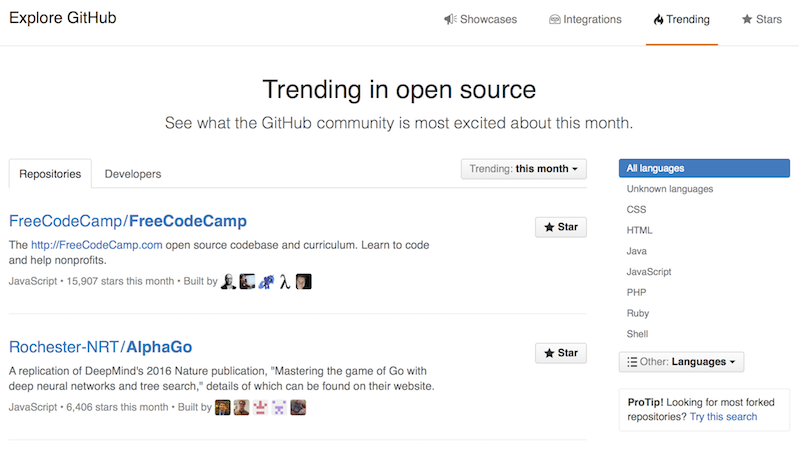

Open Source First
Presentation http://eddiejaoude.github.io/opensource-first-presentation
Source https://github.com/eddiejaoude/opensource-first-presentation
What we will cover
- GitHub overview
- What to look for when using an Open Source Project
- Best Practices for your Open Source Projects
GitHub
How would you describe GitHub?
I would describe GitHub as
Facebook for Developers
Social coding
"GitHub is how people build software. With a community of more than 14 million people, developers can discover, use, and contribute to over 35 million projects using a powerful collaborative development workflow."
GitHub AboutWho uses?
Why?
- Extended community & Quality
- Peers - team takes more pride in their work
- More: users / testers / developers
- Who will: log bugs / fix bugs / documentation
- Hiring
- Interoperability - integrate with other systems
- Flexibility of changing to another solution
- ...
Trending
GitHub is not alone
There are alternatives
But is the most popular
GitHub User Account
- Slow is smooth and smooth is fast
- Frequent activity is better than all in 1 day
- Organisations/Communities are important
GitHub Organisation
Stars
"Starring a repository allows you to keep track of projects that you find interesting, even if you aren't associated with the project"
- Creating a bookmark for easier access
- Showing appreciation to the repository maintainer for their work
- Dont rely on this alone
Forks
- Use someone’s project as the starting point for your own
- Contribute to someone else’s project
GitHub Repository
Not Project
Why should it be public?
Common responses
- When its ready
- When tests are written
- Project finished
- Perfect / Super high quality
Little secret
- It will NEVER be ready
- Tests should be done first unless a prototype
- It will NEVER be finished
- It will NEVER be perfect if you are continually learning
Why should it be private?
Not valid reasons for Application
- Passwords
- Tokens
- Private keys
File changes


Branches

Git Flow
- master - production
- dev - mainline
- feature - eg. feature/issue-no-title
- hotfix - eg. hotfix/issue-no-title
GitHub Pages
Free hosting of Static Website
- gh-pages branch - deploy on every commit (CD)
- html, css, javascript, Jekyll template engine
- http://username.github.io or http://organisation.github.io
- http://username.github.io/repository or http://organisation.github.io/repository
Releases / tags
Issue tracking
Labels & Milestones
Pull Requests
Wiki

Pulse
Graphs
Markdown
Is your friend
| # TEXT | h1 |
| ## TEXT | h2 |
| *TEXT* | Italic |
| **TEXT** | Bold |
| `CODE` | Inline code |
Lots of External tools
- GitHub client
- ZenHub for Issue Tracking
- TravisCI
- ...
Using / Creating an Open Source project
Your project is only as good as its weakest dependency
Before you use the Project
Checks & Due Diligence
What would you check?
README
Badges / Description / Documentation / Examples / Demo / Diagrams / Badges / Setup
Files
- CONTRIBUTION.md
- LICENSING
- Templates
Commit History
Is it frequent
Issues & Pull Requests
- Are these being submitted
- Are these replied to
- Are others replying also
- Are blockers being removed
- Are they closed / merged within a reasonable time
Automated Tests
- Does the project contain Automated Tests
- Unit / Function / End-to-end
- Continuous Integration (CI)
- Shows a level of quality & risk adverse
Branches
- Is there a branching strategy
- Alarm bells if everything is in master
- Protoype / Spike branches do NOT need tests
- Throw away
- Do NOT merge
Releases
- Dependency: Never use master, dev etc, use stable releases
- Owner: Create releases/tags when you are completely satisified
- Create these from successful builds on CI
De-couple from their code
Design Patterns
Adapter pattern can help
Never change 3rd party code managed by your package manager
Its not yours to change, even if you commit it to your repo
Conclusion
Use GitHub
Build a community
Make it easy for anyone to contribute / join
Contributions
Anyone / anything
- Code & Pull Request
- Any Pull Request - Docs, Typo, etc
- Any feedback / comment
- These are all helpful contributions
Join a community
Ask for help, but be clear & consise
- What is the error
- What did you do to get it / how to reproduce it
- Can you narrow it down to a line(s)
- Screenshot
- What OS
- What Version of the framework/library/tool
- If your work is Open Source, link to the file & line
Research the project first
Resources
- https://guides.github.com
- https://help.github.com
- https://guides.github.com/introduction/flow/